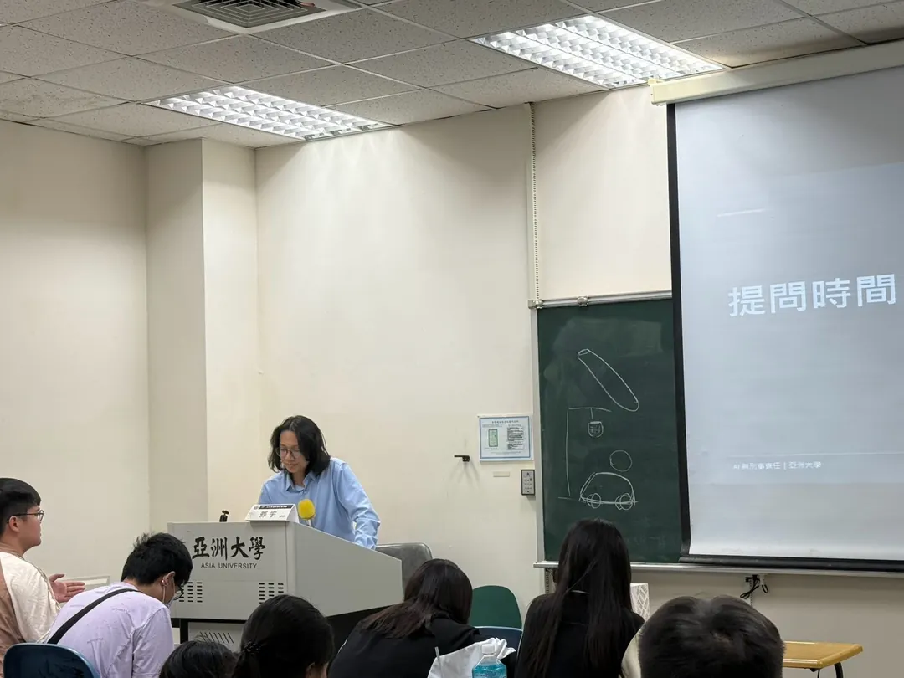
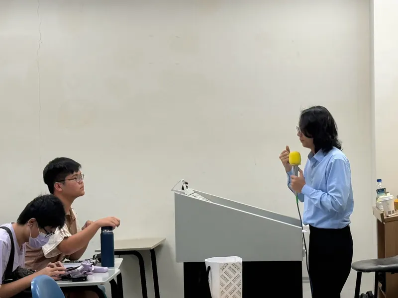
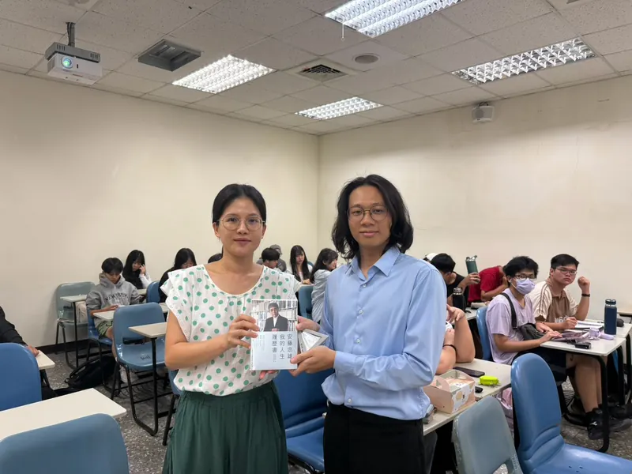

2026 年 11 月 5 日，我受邀來到亞洲大學，與學生分享人工智慧發展所衍生的刑事法律問題。這是我第一次以講師的身分站上大學講台。
走進教室時，看見現場比預期更多的學生，坦白說有點緊張。以前坐在台下聽課的是自己，現在卻換成我要站在台前向大家介紹法律。不過，真正開始講課後，那份緊張很快就消失了。

演講內容：從 AI 工具到刑事責任
從「AI 跟菜刀」談刑法基本原則
考量到現場有不少非法律背景的學生，我不希望整場只是介紹法條或艱深概念，因此選擇從一個生活化的比喻開始。
「AI 跟菜刀，有什麼相似之處？」
菜刀可以用來料理，也可能被拿來傷害他人。同樣地，AI 可以協助我們完成許多工作，也可能被用於違法行為。但刑法判斷不是單純看某項工具有沒有被用於犯罪，而是必須檢視行為人的具體行為、主觀認識，以及個別犯罪成立要件。
藉由這個比喻，我希望讓學生理解：面對新科技帶來的問題，不見得需要從零開始建立法律概念，許多疑問仍然可以回到刑法基本原則進行分析。
AI 仿聲詐騙：沒有打電話的人，也可能負責嗎？
講座第一個案例是 AI 仿聲詐騙。我以假設情境說明：甲利用 AI 模仿兒子的聲音，乙則假冒兒子向母親打電話，謊稱兒子出了車禍、急需二十萬元。當聲音聽起來與家人幾乎一樣，原本就常見的詐騙手法，也可能變得更難辨認。
我藉此介紹詐欺罪的成立要件，以及刑法第 339 條之 4 第 1 項第 4 款關於以科技方法製作他人不實聲音等方式犯詐欺罪的規範。接著進一步討論：負責製作假聲音的甲並未親自打電話，是否仍可能與乙成立共同正犯？如果母親及時發現異狀、沒有交付款項，是否仍涉及詐欺未遂？
這些問題讓學生看到：使用 AI 犯罪時，法律要分析的不只是受騙者遭遇什麼結果，還包括不同參與者的分工、主觀犯意，以及犯罪行為進行到哪個階段。
AI 生成不實性影像
在第二個案例中，我介紹了 AI 生成不實性影像涉及的法律問題。當影像能夠透過科技製作成以假亂真的內容，是否符合犯罪要件，仍須依製作方法、影像內容、使用行為及相關規定進一步判斷。
Hugging Face 事件與 AI 系統責任
最後以 Hugging Face 相關事件為例，討論 AI 系統在執行任務時可能採取超出原先預期的行動。這類情境更需要分清楚：開發者、部署者與使用者各自做了什麼，以及是否具有法律所要求的主觀要件；不能只因為結果由 AI 造成，就直接將責任推給某個人。
學生提出的問題，讓討論更有意思
這次演講中，有位學生問我：如果 AI 系統遭到植入惡意程式，使用者完全不知情，卻因此造成違法結果，使用者是否需要承擔刑事責任？
我從刑法上的故意與過失切入，說明刑事責任不能僅以結果是否發生來判斷，仍須依具體犯罪要件和個案事實認定。
學生接著追問：為什麼有些詐欺或洗錢案件，被告主張自己不知道涉及犯罪，法院仍可能認定具有犯罪故意？
這也讓我有機會說明，法院判斷主觀犯意時，可能參考行為人的經歷、行為過程及其他間接證據。反詐騙宣導的普及程度可能是個案判斷中的背景因素之一，但不代表只要有宣導，就能直接推定任何人具有犯罪故意。
接著，學生又將問題延伸到 AI：如果將來社會上的 AI 風險宣導也像反詐騙宣導一樣普遍，是否可能影響法院對使用者主觀認識的評價？
我很喜歡這樣的提問。它讓討論從既有的刑事實務，延伸到科技發展可能帶來的新法律問題。

從講座回到法律工作的日常
這是我第一次以講師的身分分享法律知識。準備時原本擔心講稿太長、站上講台後會忘記內容，實際開始約五分鐘後便進入狀況。對我而言，這次經驗更重要的收穫，是重新思考如何將複雜的法律問題說清楚。
不論是 AI 仿聲詐騙、AI 生成不實性影像，或是 AI 系統採取預期之外的行動，技術雖然不同，仍須回到具體行為、主觀認識、因果關係與法律要件，才有辦法討論刑事責任。
這也與我平常處理法律案件的方式相同：先釐清事實與證據，再判斷法律與可能的風險；不急著用單一答案概括所有情況。面對非法律背景的人，更需要把推論過程講清楚，讓對方知道結論是怎麼得出的。
感謝亞洲大學老師的邀請與安排。這次講座讓我有機會將實務上重視的分析方法，帶進大學課堂與學生討論。

想進一步了解我的法律工作理念、辦案方式與講座經歷，可前往 鄧宇律師的個人介紹 →